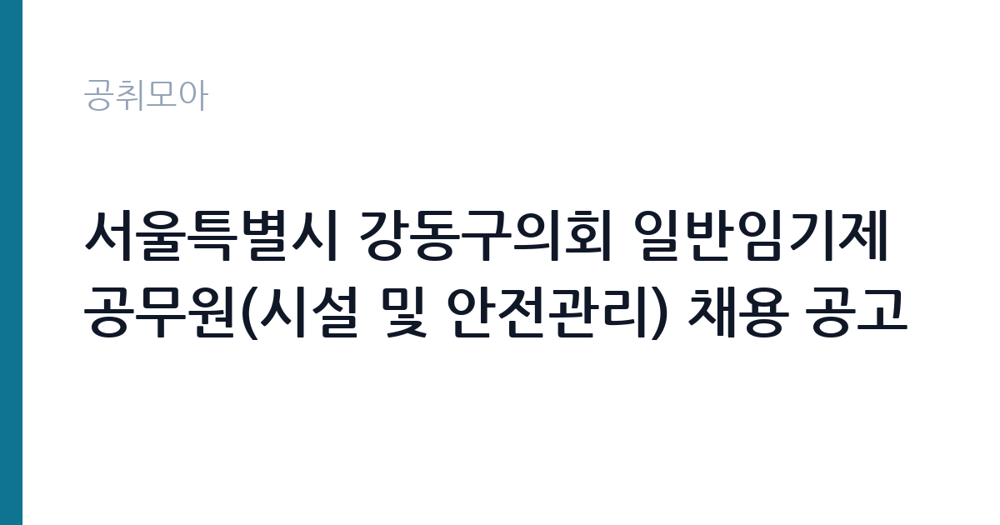

[지자체] 서울특별시 강동구의회 일반임기제공무원(시설 및 안전관리) 채용 공고
서울특별시 강동구 의회사무국 · 서울 · 마감 2026-11-13 (D-10) · 출처 나라일터

한눈에 보는 모집 조건
| 기관 | 서울특별시 강동구 의회사무국 |
|---|---|
| 공고명 | 서울특별시 강동구의회 일반임기제공무원(시설 및 안전관리) 채용 공고 |
| 고용형태 | 임기제 |
| 근무지 | 서울 |
| 게시일 | 2026-11-03 |
| 마감일 | 2026-11-13 (D-10) |
지원자격, 이렇게 읽으세요
- 임기제지방공업주사보(7급상당) 1명
- 접수 ~2026-11-13 마감
- 세부 조건은 원문 공고문 확인
임기제공무원은 공무원 신분이지만 임용 기간이 정해져 있습니다. 전문성이 필요한 업무에 채용되며 임용 기간과 연봉등급이 공고문에 명시됩니다. 임기 중에는 공무원으로서의 복무 규정과 이해충돌 방지 의무가 적용됩니다. 이번 공고는 서울특별시 강동구 의회사무국이 직접 진행하는 자체 전형입니다. 시설 관리 직무는 관련 자격이나 경력을 우대하는 경우가 많습니다. 전기기능사나 설비보수, 소방설비 관련 자격이 있으면 유리하고 일부 공고는 자격을 필수로 요구합니다. 운전면허와 교대 근무 가능 여부도 자주 확인하는 항목입니다. 시설 규모가 큰 기관은 담당 구역이 나뉘어 있어 구체적인 업무 범위를 공고문에서 확인해야 합니다. 국가공무원법상 결격사유와 신체 조건 확인 절차가 있습니다. 응시 자격 판단이 애매하면 접수 전에 채용 담당 부서로 문의하는 편이 안전합니다. 우대 사항에 해당하면 증빙을 반드시 첨부해야 하며, 누락하면 가점 없이 평가됩니다. 공고문의 응시자격 표를 보면 자격 항목이 여러 줄로 나뉘어 있으므로, 각 줄을 하나씩 체크하며 본인 해당 여부를 표시해 두면 누락을 줄일 수 있습니다.
이 공고의 포인트
이 공고의 첫 번째 포인트는 고용 형태입니다. 임용 기간이 정해져 있지만 공무원 신분으로 복무 규정이 적용되고, 전문성이 인정되면 재임용이나 유사 직위 지원에 도움이 됩니다. 두 번째는 업무 범위가 명확하다는 점입니다. 시설 관리·경비 직무로 채용되므로 배치 이후 담당 업무가 크게 흔들리지 않습니다. 세 번째는 근무지입니다. 서울 지역 근무로 접근성은 좋지만 그만큼 지원자가 몰리는 지역이므로 경쟁률을 넉넉히 잡아야 합니다. 재공고로 올라온 공고라 이전 차수 지원자와의 형평성 기준을 확인할 필요가 있습니다. 같은 직무로 함께 올라온 공고 가운데 접수 마감이 가장 늦은 편이라 준비 시간을 상대적으로 확보할 수 있습니다. 다만 선발 인원이 1명으로 많지 않아 자격을 갖춘 지원자가 몰리면 경쟁률이 높아질 수 있습니다.
전형은 어떻게 진행되나
서류전형과 면접전형 외에 직무수행능력 평가가 붙는 경우가 있습니다. 평가 방식은 공고문에 구체적으로 적혀 있으므로 어떤 항목에 배점이 높은지 먼저 파악하십시오. 면접에서는 지원 동기보다 실제 업무 경험에 대한 질문이 많고, 답변의 구체성이 평가를 가릅니다. 전형 일정은 서류 마감 이후 빠르게 진행되므로 연락 가능한 번호를 정확히 기재하고 문자와 메일을 수시로 확인해야 합니다. 최종 단계에서는 결격사유 조회와 신체검사가 진행됩니다. 결과 발표는 문자와 이메일로 동시에 이뤄지지 않는 경우가 있어 두 경로를 모두 확인하십시오.
이런 분께 추천해요
- 시설·설비 점검 경력이나 관련 자격을 가진 분
- 교대·야간 근무와 비상 출동에 응할 수 있는 분
- 안전 점검 기록을 성실히 관리하는 분
지원 전 체크리스트
- 응시자격 요건과 경력 기준을 충족하는가 — 경력은 증명서로 입증해야 합니다
- 임용 기간과 연봉등급, 근무 시간 조건을 확인했는가
- 제출서류 목록을 모두 준비했는가 — 누락 시 서류 단계에서 탈락합니다
- 접수 마감 2026-11-13 이전에 접수 방식을 확인해 제출했는가
모집 일정과 제출 타이밍
접수 마감은 2026-11-13이고 공고는 2026-11-03에 게시되었습니다. 준비 기간 10일 안에 서류 작성, 증빙 발급, 접수를 모두 마쳐야 하므로 주말을 포함해 일정을 미리 나누는 것이 좋습니다. 특히 경력 기술서나 직무수행계획서를 요구하는 공고는 작성에 시간이 걸리므로 첫날 초안을 잡으십시오. 서류 합격자 발표와 면접 사이 간격이 짧은 경우가 많아 면접 예상 질문은 서류 제출 전에 정리해 두는 편이 유리합니다. 마감 직전에는 접속이 몰리므로 여유를 두고 제출하십시오. 마감 이후에는 어떤 사유로도 접수가 인정되지 않으므로 하루 전 제출을 목표로 하십시오.
직무 이해하기: 지자체
지방의회는 조례 제정과 예산 심의, 행정 감시를 수행하는 의결기관입니다. 의원을 보좌하는 정책지원 인력과 회의 기록 인력을 별도로 두고, 회기 중에는 업무량이 크게 늘어납니다. 시설 관리 업무는 건물과 설비가 정상 작동하도록 점검하고 고장을 처리하는 일입니다. 전기·수도·냉난방 설비의 작동 상태를 확인하고, 이상이 있으면 정비를 요청하거나 직접 보수합니다. 출입 통제와 순찰, 방문자 안내, 주차 관리가 함께 붙는 경우도 많습니다. 야간이나 휴일에 비상 연락을 받고 출동하는 체계가 운영되므로 교대 근무가 포함될 수 있습니다. 시설 안전 점검 기록을 남기는 것도 중요한 업무입니다. 이 직무는 담당 구역이 정해져 있어 근무지에 따라 실제 업무 환경이 달라집니다. 업무 강도와 근무 시간대는 부서 배치에 따라 달라지므로 면접에서 확인하는 것이 가장 정확합니다. 이 건의 근무 대상 지역·부서는 원문 기준 '시설 및 안전관리'입니다.
자기소개서 작성 팁
시설 관리 지원서는 고장을 예방한 경험과 안전 의식을 보여주는 것이 핵심입니다. 정기 점검표를 만들어 운영한 경험, 위험 요소를 발견해 조치한 사례를 구체적으로 쓰십시오. 자격과 경력은 서류에 드러나므로 자소서에서는 판단 과정과 협업 방식을 서술하는 편이 좋습니다. 장기 근무 의사와 교대 근무 수용 여부를 분명히 밝히십시오. 구성은 지원 동기, 직무 경험, 기여 방안 순서가 무난합니다. 지원 동기는 서울특별시 강동구 의회사무국의 사업 중 본인이 관심을 가진 부분을 한 가지로 좁혀 서술하고 추상적인 표현은 줄이십시오. 직무 경험은 담당했던 업무와 규모, 결과를 수치로 제시하면 설득력이 올라갑니다. 기여 방안은 입사 후 첫 3개월과 1년 계획으로 나눠 쓰면 준비도가 드러납니다.
면접 준비 포인트
면접에서는 돌발 상황 대응과 협업 태도를 봅니다. 누수가 발생했을 때 첫 조치가 무엇인지, 시설 고장 신고가 여러 건 겹칠 때 우선순위를 어떻게 정할지 묻습니다. 안전 점검 기록을 어떻게 관리해왔는지 구체적으로 답하십시오. 교대 근무와 야간 대응 가능 여부도 반드시 확인합니다. 답변 시간이 짧게 정해져 있는 경우가 있으므로 핵심 문장을 먼저 말하고 근거를 붙이는 방식이 유리합니다. 본인 경험을 말할 때는 기간, 역할, 결과를 순서대로 정리해 두면 질문이 바뀌어도 활용할 수 있습니다.
급여·근무조건 읽는 법
시설 관리 직무의 보수는 무기계약직 또는 공무직 임금표에 따라 기본급과 수당으로 구성됩니다. 자격 수당과 교대 근무에 따른 야간·휴일 수당이 붙는 경우가 있어 기본급만으로 비교하기 어렵습니다. 2026년 최저임금은 시급 10,320원, 월 환산 2,156,880원(209시간 기준)이며, 교대 근무자는 근무표에 따라 실수령액이 달라집니다. 정확한 금액과 수당 항목은 공고문 처우표에서 확인하십시오. 무기계약이면 정년까지 근무가 가능해 장기 소득 안정성이 큽니다. 다만 서울특별시 강동구 의회사무국의 보수 수치는 이 글에서 확인된 공시 자료가 없어 추정해 제시하지 않았습니다. 공고문 처우 항목과 첨부된 보수표를 기준으로 확인하십시오. 알리오 2025년 결산 공시 기준 공공기관 전체 일반정규직 1인당 평균보수는 7,376만 9천원, 신입사원 평균초임은 4,031만 6천원입니다(무기계약직 미포함). 2026년 적용 최저임금은 시급 10,320원, 월 환산 2,156,880원(주 40시간·209시간 기준)입니다. 고용노동부 고시 제2025-47호로 확정된 금액입니다. 공고문에 금액이 제시되지 않은 항목은 원문 보수표나 처우 설명에서 확인해야 하며 확인되지 않은 수치는 쓰지 않는 것이 원칙입니다. 비교할 때는 월 급여뿐 아니라 상여·명절휴가비·복지포인트·초과근무수당까지 포함한 연간 총액으로 계산하십시오. 기간제라면 계약 기간 동안의 총액을, 무기계약이라면 호봉 상승과 정년까지의 누적 소득을 기준으로 판단하는 편이 정확합니다.
자주 묻는 질문
- 선발 인원은 몇 명인가요?
공고문 기준 1명입니다. 직종별로 인원이 나뉘는 경우가 있으니 모집분야 항목을 함께 확인하십시오. - 근무지는 어디인가요?
서울 지역의 서울특별시 강동구 의회사무국 소속 근무지입니다. 세부 주소와 출퇴근 조건은 원문 공고문에서 확인할 수 있습니다. - 보수는 얼마인가요?
채용 신분(임기제공무원)과 기관 임금 규정에 따라 정해지며 구체적인 금액은 공고문 처우 항목에 제시됩니다. 금액이 공개되지 않은 경우에는 원문의 보수표를 확인하십시오.
함께 보면 좋은 공고
[지자체] 2026년 제8회 구미시 임기제공무원 임용시험 계획 재공고 — 마감 2026-11-18[지자체] 2026년 제10회 구미시 임기제공무원 임용시험 시행계획 공고 — 마감 2026-11-18[지자체] 2026년 제2회 진안군 공무직근로자(정수시설관리원) 채용계획 재공고 — 마감 2026-11-13출처: 나라일터 공개정보를 바탕으로 공취모아가 정리한 안내글입니다. 모집 조건·일정은 변경될 수 있으니 지원 전 반드시 원문 공고문을 확인하세요. 본 글은 정보 제공용이며 합격을 보장하지 않습니다.